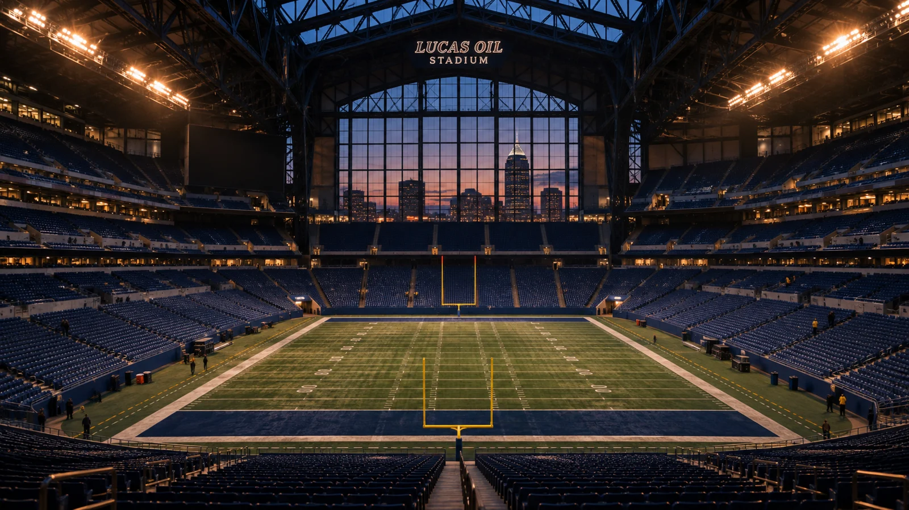

OKLAHOMA CITY BISONS
OKLAHOMA CITY BISONSThe Colts’ Farewell Season
February 22, 2027 · Oklahoma City · 2h 04m

One city. One final season. A complicated goodbye.
The first audience for The Colts’ Farewell Season watched in Oklahoma City on February 1. For 98 minutes, the film took them back to Indianapolis. It opened with the Hoosier Dome, Peyton Manning and Tony Dungy, then settled on a season-ticket holder whose father took him to his first game at eight. He took his son at the same age. Now he takes his grandson. “You can’t put a price on that,” he says.
After that screening, Bryan Luong asked Mina Kimes and Rachel Park to make a version Indianapolis fans could return to when they missed their team. The filmmakers screened the finished 124-minute cut on February 22, after the franchise had completed its move on February 10. The network approved the extended cut for distribution. A public release date is still pending.
From the ownership change to the deadline
The original film let Indianapolis fans speak plainly about the relocation, which NFL owners approved 30–1–1 on November 11. One fan says she doesn’t care how nice the owner is. She just doesn’t want to lose her team. The longer cut keeps that tension and spends more time inside the building, where a 2–7 team was trying to win games while its future in Indianapolis slipped away.
Scot McCloughan explains how Luong recruited him and what they discussed about scouting and personnel. At the trade deadline, Indianapolis sent Daniel Jones, Josh Downs and the 2027 No. 40 pick to the Chargers for Justin Herbert, Omarion Hampton and No. 146. The film catches Shane Steichen staring at his phone after hearing the deal was done. Brandon Aiyuk and Marvin Harrison Jr. arrive in the same stretch, as equipment staff prepare jerseys and coaches adjust practice plans.
The same horseshoe
The new Harrison segment opens with Marvin Harrison Sr. catching a Manning touchdown, then follows his son into the Colts facility. Harrison Jr. talks about trying to help the team win and the feeling of seeing his father in photos around the building before putting on the same helmet. His father’s perspective comes from an archival interview. The younger Harrison’s Indianapolis chapter lasted only part of a season, but the film gives it room alongside the history that made it matter.
One last Sunday
Indianapolis won seven of its last eight games to finish 9–8. The extended finale gives more time to Jaylon Carlies’s two interceptions, Clelin Ferrell’s 1.5 sacks and forced fumble, and DJ Giddens’s touchdown in the 20–14 win over Jacksonville. Then the owner tackles Ferrell and lifts Giddens and Herbert. The theater laughed at the first screening. Three weeks later, the footage still got them.
The film slows down with Frank Delaney, who spent 24 years in the Colts equipment room and stayed in Indianapolis. He talks about appreciating the chance to say goodbye while still disagreeing with what happened. Tommy holds up his Herbert autograph. Employees and their families come onto the field. Luke Rhodes’s farewell plays nearly uninterrupted before the remaining fans gather for one last photograph. The film holds on it in silence.
In the epilogue, Luong says he felt he had done right by Indianapolis even though some fans felt robbed. The season-ticket holder from the opening is still angry and still glad he got one last win. The final shot is Lucas Oil Stadium at dusk.
Read the Indianapolis farewell · Week 18 box score · 2026 season stats